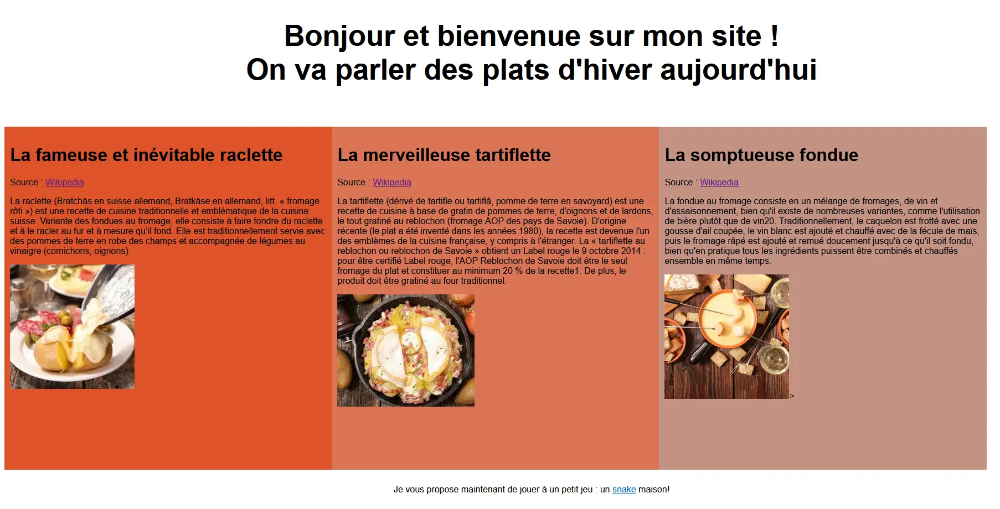

Le MON-1 de Léonard
- MON
- 2022-2023
- temps 1
- Léonard Barbotteau
HTML, CSS et JAVASCRIPT
Description
Dans ce MON, je vais revoir les grands points du CSS et de l'HTML, ainsi que m'introduire à l'écriture du javascript
Rappels d'HTML et découverte du Javascript.
Cette partie consiste particulièrement à revoir HTML et CSS. Comme mes connaissances ne sont pas très poussées, j'ai décidé de suivre un cours sur openclassrooms. De plus l'objectif du MON est d'apprendre également le Javascript, que je n'ai jamais vu avant cette année.
1. Apprentissage du HTML/CSS
A l'aide d'openclassroom, je revois et découvre de nombreuses possibilités offertes par les deux langages. Cette étape m'a pris 8h.
Il est important de noter tout d'abord que tous les navigateurs ne supportent pas toutes les fonctionnalités, même si aujourd'hui ils englobent quasiment tout ce dont on peut avoir besoin.
Les possibilités offertes par le HTML et ses particularités.
Les balises
Les balises nous permettent d'indiquer la fonction du contenu qu'elle encadre, avec une balise ouvrante et une balise fermante.
Il faut faire attention : l'HTML est utilisé pour le fond du document plus que sur la forme contrairement au css. Certaines balises: "em", "strong", "mark" modifient l'aspect du texte, mais pour autant ce n'est pas leur fonction principale : elles servent surtout aux moteurs de recherche, à l'ordinateur.
Les balises qui structurent la page
Je ne vais pas m'attarder sur toutes les balises car je connais déjà un peu le html. Mais les balises qui structurent la page me sont étrangères en général.
- header correspond à l'en-tête
- footer au pied de page
- nav donne les liens de navigation
- section est une portion au centre de la page
- article donne une portion autonome de la page
Les attributs
Les attributs sont dans la balise ouvrante. Ils sont utilisés pour fournir une information supplémentaire sur les éléments HTML. On peut en mettre plusieurs sur la même balise. Parmis les plus utilisés il y a:
- href pour définir l'adresse du lien
- height pour la hauteur de l'élément
- width pour la largeur de l'élement
- style si l'on veut attribuer un style css particulier à l'élément
Plein d'autres attributs existent, il est bien de les connaître leur existence et ce qu'ils peuvent faire afin de les retrouver plus facilement.
Ajouter des images
On peut également grâce à l'HTML insérer des images et des GIF. Pour les images, le format bitmap n'est pas adapté car il est trop lourd. Il faut faire attention aux dimensionnements de l'image également.
Connecter au JavaScript
On peut à l'aide de l'HTML faire en sorte de lancer une fonction Javascript existante dans le Script de la page en mettant un attribut "onclick = "lafonction()" à un élément HTML. On peut le faire avec un bouton par exemple.
L'élément tableau
Cet élément est intéressant en HTML. Pour le construire, on utilise la balise table. tr détermine le début (et la balise fermante la fin) d'une ligne et td le début et la fin d'une cellule. On peut utiliser collapse pour coller les lignes du tableau, la valeur par défaut étant des lignes séparées.
Pour la ligne d'en-tête du tableau on utilise la balise th pour les cellules.
Enfin, le titre du tableau est attribué par caption. Il existe encore d'autres fonctionnalités pour un tableau.
L'élément formulaire
L'élément form est assez intéressant en particulier. Il permet de contenir des contrôles interactif dans une section d'un document pour permettre à l'utilisateur de fournir des informations, comme pour un login par exemple.
L'attribut method va définir comment les données sont envoyées.
L'attribut action donne l'adresse de la page ou du programme qui va traiter les informations
La balise label va permettre de nommer un input en s'associant à l'id de l'input. PlaceHolder est un attribut qui quant à lui va afficher un string grisé là où l'utilisateur est censé donner l'information.
On peut aussi faire des listes déroulantes, des cases à cocher, des zones d'options.
Les possibilités offertes par le CSS et ses particularités.
On peut écrire le css de trois manières différentes :
- Dans l'entête du HTML, dans la balise head
- Dans les balises directement avec l'attribut style
- Dans fichier css externe que l'on appelle après dans l'HTML La dernière option est plus propre et permet de faire en sorte de pouvoir utiliser le css dans plusieurs pages HTML.
Le lien avec le HTML
- On peut dans le css changer n'importe quelle balise, et en créer de nouvelles. Exemple : la balise p du paragraphe
- On peut également créer des classes (avec un . devant), qui peuvent être appelées dans le HTML avec l'attribut class.
- On peut écrire du css pour des id (avec un # devant), qui fonctionnent comme les balises sauf qu'on les utilise qu'une fois en pratique. Les id sont utiles pour utiliser le JavaScript après.
- On peut aussi associer du css à deux balises a et b (a, b) et à une balise a contenue dans une balise b (b a).
Lorsque l'on veut modifier du texte à l'intérieur d'un texte d'une balise en HTML, on utilise la balise span avec la class css que l'on utilise. A l'inverse, si on veut modifier le css de tout un pan d'HTML contenant plusieurs balises, on utilise la balise div.
Les propriétés css
Il existe de nombreuses propriétés css influant sur l'HTML.
- font-size pour la taille du texte en pixels : en nombre de pixels avec px, en taille relative avec small/medium/large etc ou en em (0.8em, 1.5em...)
- font-family pour la police
- font-weight pour le mettre en gras
- text-decoration pour mettre une ligne
- text-align pour aligner le texte à droite, gauche etc
- float pour faire flotter une image
- clear pour que le texte s'affiche autour de l'image
- background-color pour la couleur de fond
- color pour la couleur de fond
- border pour l'apparence de la bordure (largeur, couleur, type de bordure, bordure arrondie)
- box-shadow ou text-shadow pour mettre des ombres
- background-color pour la couleur de fond
Les apparences dynamiques
Une fois que la page a été chargée, on peut changer l'apparence des éléments, à l'aide de pseudo-formats css
Changer l'apparence au survol
Pour faire ceci il suffit d'utiliser :hover au bout d'une balise dans le css. L'apparence décrite apparaitra alors lors du survol de la balise à laquelle :hover est rattachée.
Changer l'apparence au moment du clic
Pour faire ceci il suffit d'utiliser :active au bout d'une balise dans le css. L'apparence décrite apparaitra alors lors d'un clic sur la balise à laquelle :active est rattachée.
2. Création de la page web
Je commence le projet en HTML et CSS en parallèle du point précédent en créant un fichier site.html. J'ai fait quelque chose de très simple mais qui m'a permis d'utiliser les connaissances acquises, de découvrir aussi plein de template en css ce qui je pense sera ma solution retenue à l'avenir. Je pense que se baser sur un css bien fourni et changer certains objets si besoin est plus efficace que faire tout son css soi-meme.
Voici le résultat : 
3. Apprentissage du Javascript
J'ai ensuite vu des tutos sur youtube pour m'introduire au JavaScript. Je suis également retourné sur open classroom. Le temps qui me restait était court mais je voulais comprendre les bases.
Les variables
Les variables permettent d'enregistrer et manipuler des données. Une variable contient une donnée. Cette donnée s'appelle valeur. Il est important pour bien s'y retrouver que la variable ait un nom qui corresponde à ce qu'il y a à l'intérieur, quitte à ce que le nom soit long.
La déclaration
Pour déclarer une variable on utilise le mot let ou var suivi du nom de la variable.
Si on déclare la variable avec const, elle devient alors une constante et le javascript renvoie une erreur si on tente de la modifier.
La manipulation
On peut utiliser les opérateurs normaux pour influer sur les variables (+, -, +=, -=, *, /, *=, /=)
Les types primitifs
Il y a trois types primitifs : les nombres, les chaînes de caractères et les booléens. Les string peuvent se concaténer avec "+". Dans JavaScript, chaque variable peut changer de type (typage faible).
Il vaut mieux utiliser les constantes tant que possible.
Les objets
Plusieurs objets ayant des points communs et pouvant être expliqués de la même manière peuvent être décrits par des modèles, qu'on appelle des classes.
Les objets sont écrits en JSON : des séries de paires clés-valeurs. Exemple:
let example = {
firstname: "Leonard",
lastname: "Barbotteau",
};
Si on veut récupérer un attribut (exemple le prénom), on utilise ".":
let prenom = example.firstname
Les constructeurs
Pour créer une classe on utilise un constructeur. Quand une instance de cette classe est créée, on écrit new puis le nom de la classe appelée.
Dans le constructeur, on déclare les attributs avec this. Exemple:
class example = {
constructor(firstname, lastname) {
this.firstname = firstname,
this.lastname = lastname,
}
};
let moi = new example ("Leonard", "Barbotteau");
4. Mise en application du Javascript
Pour finir ce cours, j'ai voulu mettre toutes ces connaissances en application. J'ai tenté de faire un snake tout seul mais je n'ai pas réussi et ai donc étudié un code déjà existant pour bien comprendre comment étaient agencées les fonctions.
Je me suis concentré sur les classes, les définitions d'objets qui différent bien du langage python. Les boucles sont assez similaires, et pour les applications particulières google est mon ami.